衡潮群岛 · 十五异兽卡面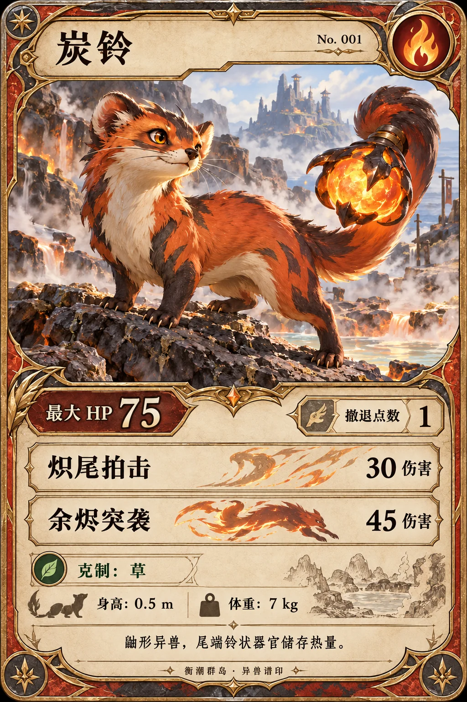
炭铃火 · HP 75 · 撤退 1
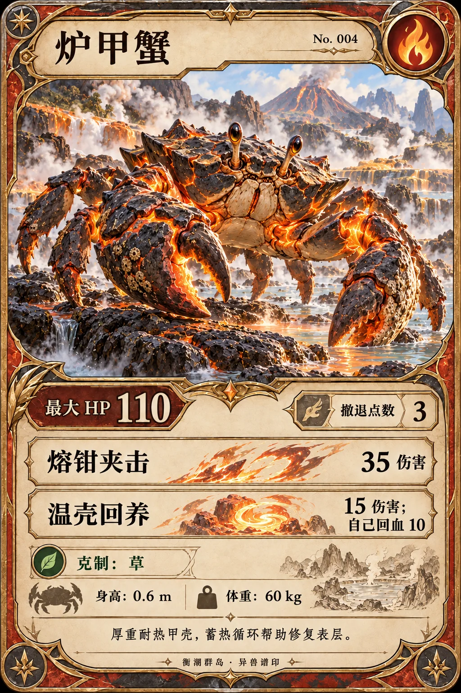
炉甲蟹火 · HP 110 · 撤退 3
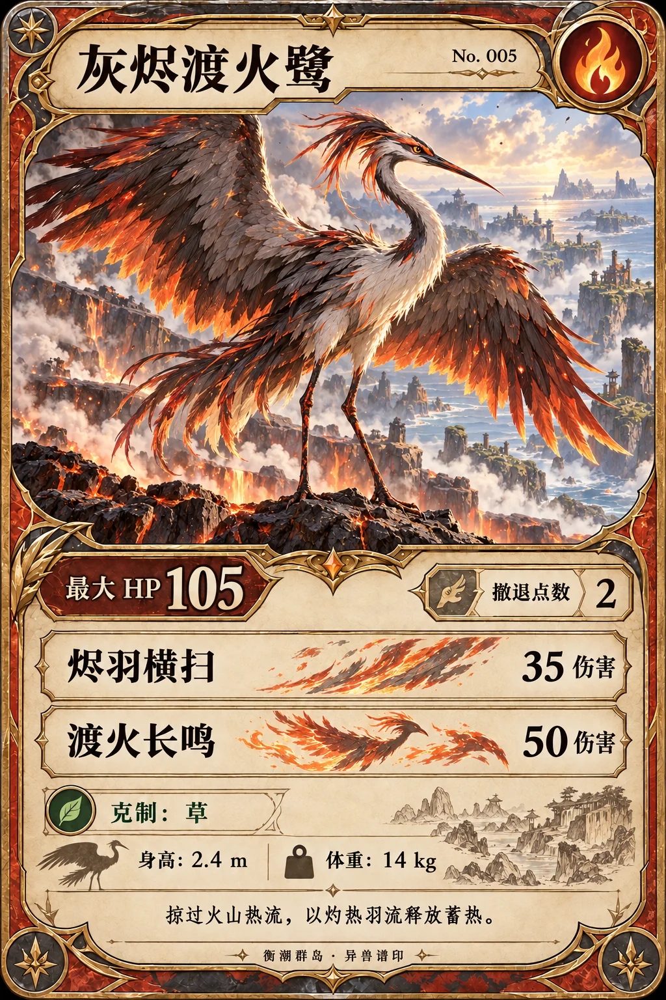
灰烬渡火鹭火 · HP 105 · 撤退 2
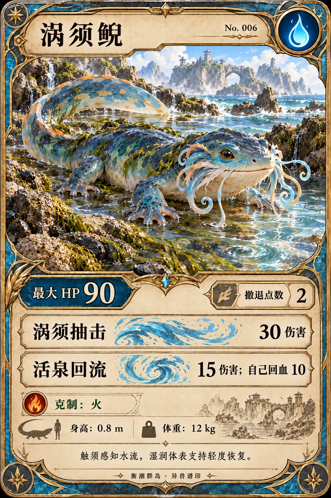
涡须鲵水 · HP 90 · 撤退 2
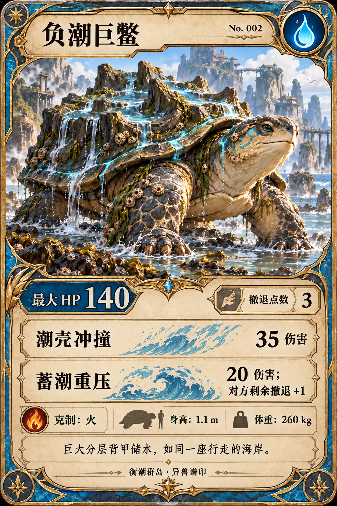
负潮巨鳖水 · HP 140 · 撤退 3
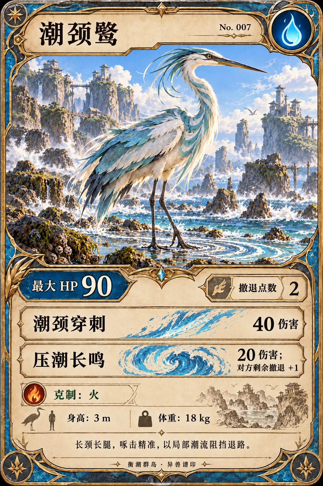
潮颈鹭水 · HP 90 · 撤退 2
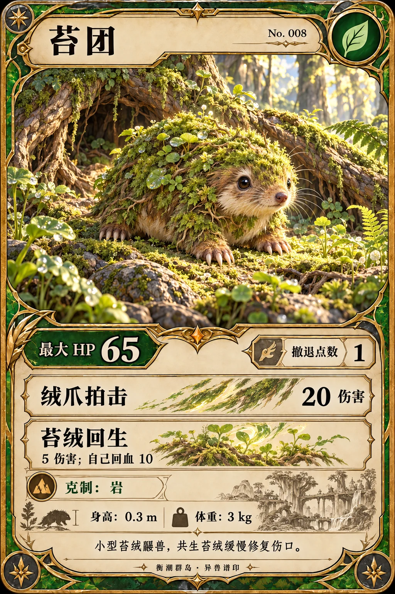
苔团草 · HP 65 · 撤退 1
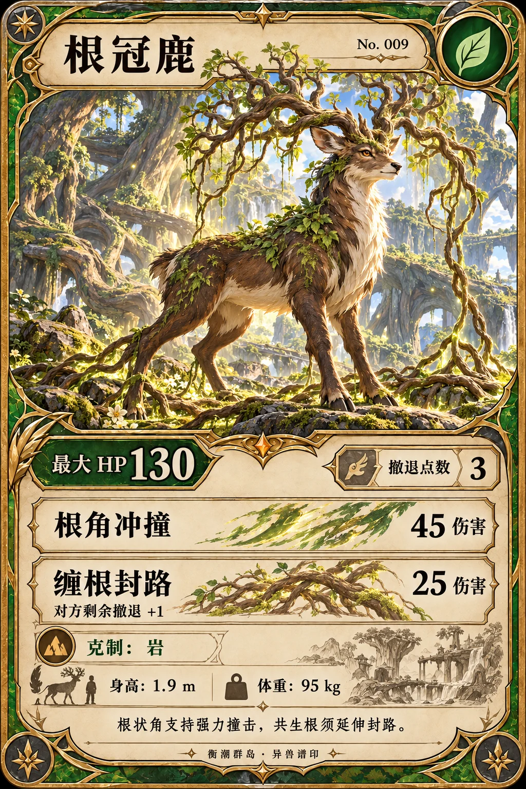
根冠鹿草 · HP 130 · 撤退 3
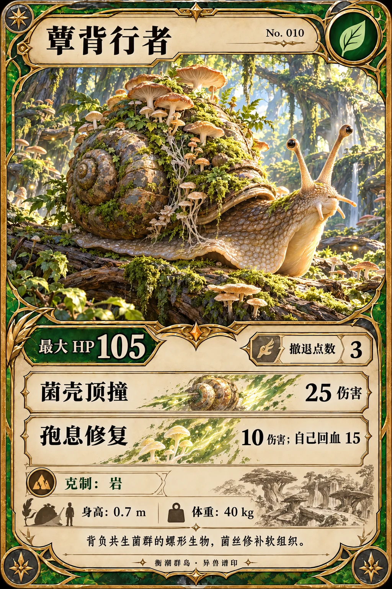
蕈背行者草 · HP 105 · 撤退 3
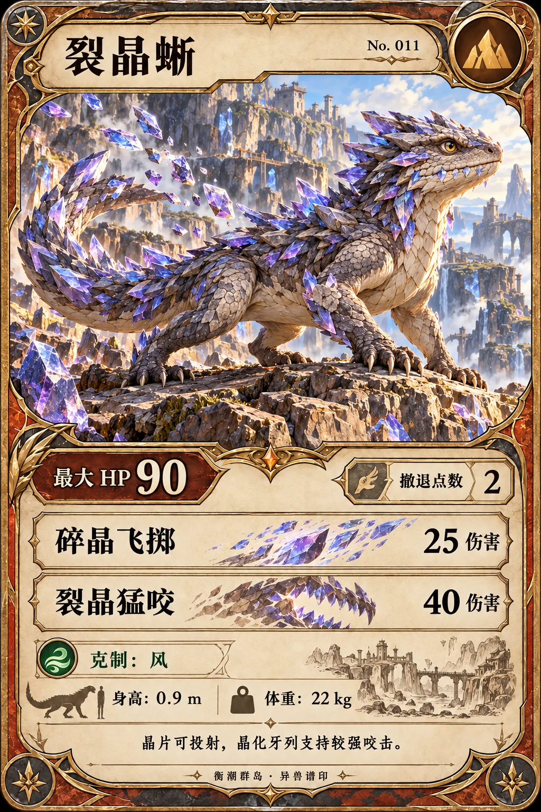
裂晶蜥岩 · HP 90 · 撤退 2
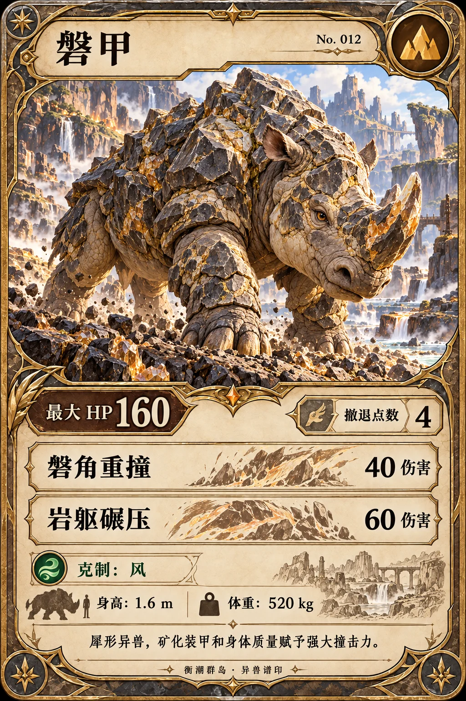
磐甲岩 · HP 160 · 撤退 4
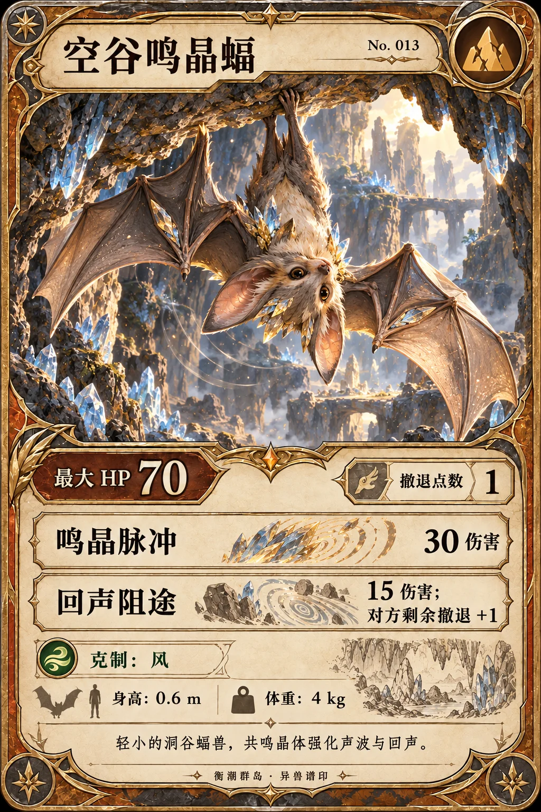
空谷鸣晶蝠岩 · HP 70 · 撤退 1
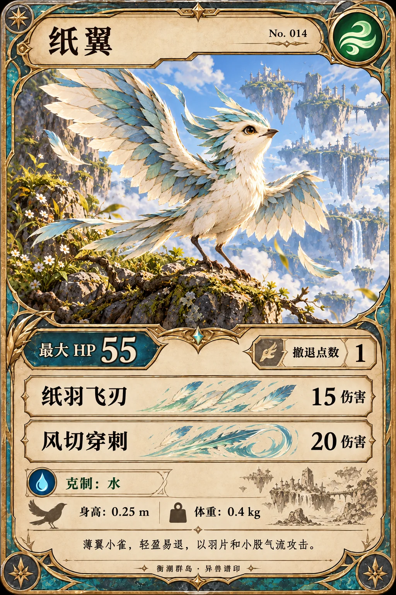
纸翼风 · HP 55 · 撤退 1
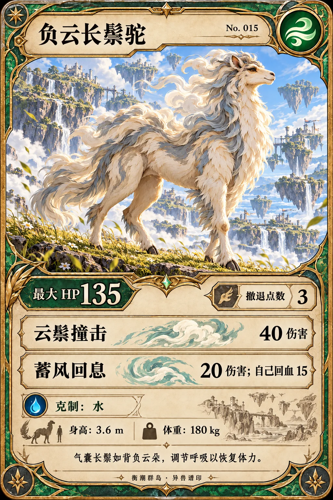
负云长鬃驼风 · HP 135 · 撤退 3
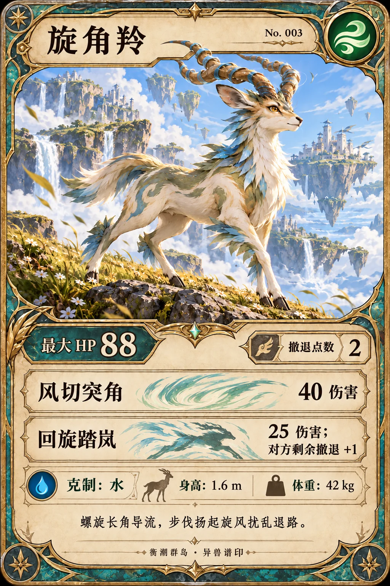
旋角羚风 · HP 88 · 撤退 2